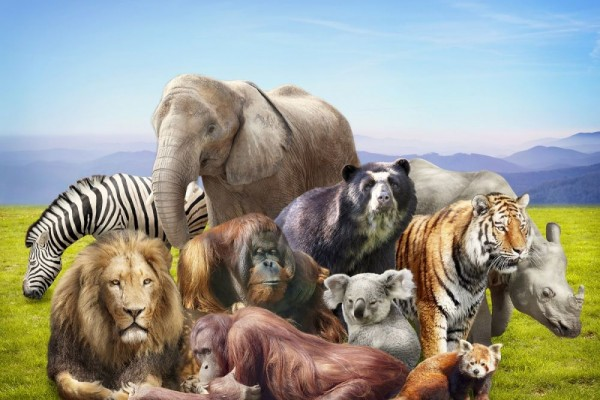
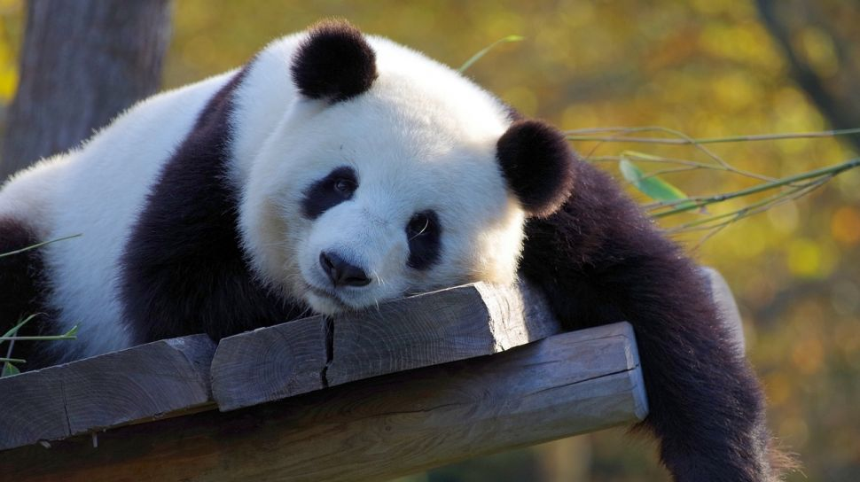
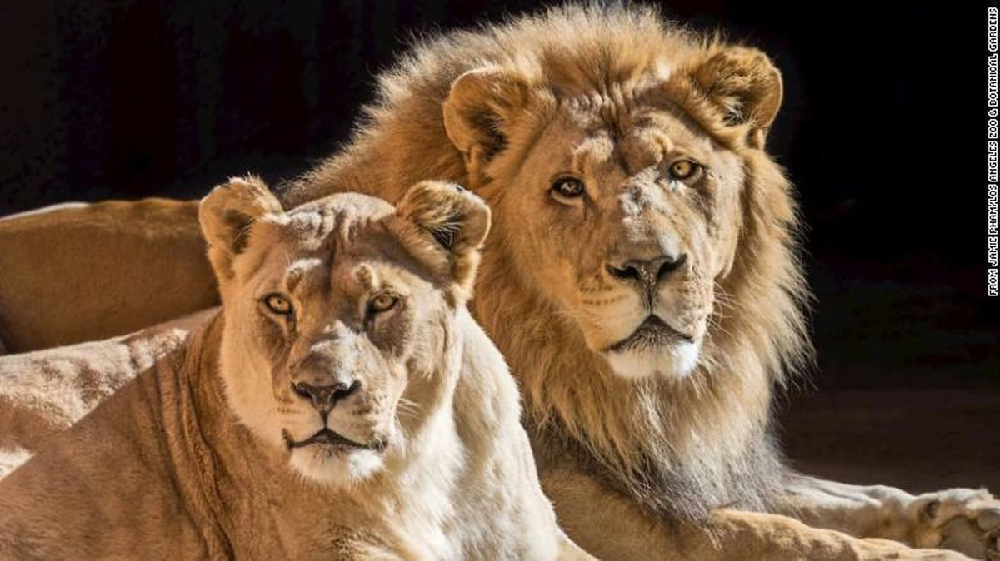

Mamalia
Hewan mamalia adalah hewan yang menyusui dan merupakan hewan dengan spesies yang paling beragam di bumi. Mamalia hadir dalam bentuk dan ukuran yang berbeda-beda. Cara hidup di lingkungan dan habitatnya pun beragam. Semua mamalia berinteraksi dengan satu sama lain. Mamalia memberi makan anak-anaknya dengan menyusui, berbeda dengan hewan unggas. Otak mamalia dinilai lebih berkembang dibandingkan spesies lainnya.
Panda
Panda adalah mamalia dari keluarga beruang. Hewan asal Tiongkok ini memiliki ciri warna bulu hitam dan putih, serta bentuk lucu dan menggemaskan. Meski termasuk keluarga beruang, namun hewan ini tidak memakan daging atau karnivora. Makanan panda adalah tumbuhan, terutama bambu. Selain itu, panda juga memakan telur dan serangga sehingga masuk dalam kategori omnivora.
Singa
Singa (Sanskerta: Siṃha, atau nama ilmiahnya Panthera leo) adalah spesies hewan dari keluarga felidae atau keluarga kucing. Singa berada di benua Afrika dan sebagian di wilayah India. Singa merupakan hewan yang hidup berkelompok. Biasanya terdiri dari seekor jantan & banyak betina. Kelompok ini menjaga daerah kekuasaannya. Umur singa antara 10 sampai 15 tahun di alam bebas, tetapi dalam penangkaran memungkinkan lebih dari 20 tahun. Singa yang lebih muda akan merebut kepemimpinan dari singa yang lebih tua.